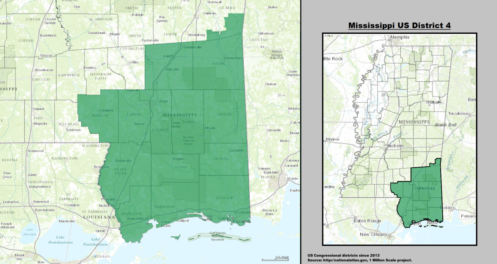

Alden started his career in the fire service in 2015. Along the way, he has become certified as a hazardous materials technician, rope rescue technician, and EMT. He has found his home within the Libertarian Party. Alden has a disdain for wasteful spending, as well as bipartisan pandering. He fully supports ending the practices of qualified immunity and civil asset forfeiture. It’s time to stop being the world’s police. Let’s stop talking about bringing the troops home, and do it. The war on drugs has failed miserably; no one should be incarcerated for possessing a plant. End no knock raids, and warrantless searches. Alden believes that rights are absolute. If you have paid your debt to society via incarceration, and pose no threat to the general public; Then you should have the right to protect yourself, and your family via firearm ownership. Minors who work a part time job should not have income tax withheld from their paychecks. The voting age is 18; He interprets that as taxation without representation. Alden is happily married to his beautiful wife. We as a nation, are more alike than different. E. Pluribus Unum translated, means “Out of Many, One.” The differences that we do have must unite us, not divide us.

MS-4, home of south Mississippi
Mississippi's 4th congressional district covers the southeastern region of the state. It includes all of Mississippi's Gulf Coast, stretching ninety miles between the Alabama border to the east and the Louisiana border to the west, and extends north into the Pine Belt region. It includes three of Mississippi's four most heavily populated cities: Gulfport, Biloxi, and Hattiesburg. Other major cities within the district include Bay St. Louis, Laurel, and Pascagoula